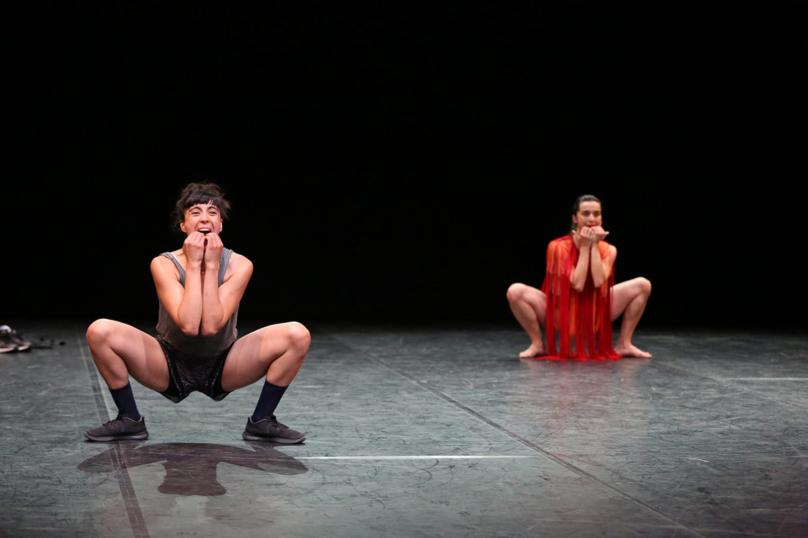
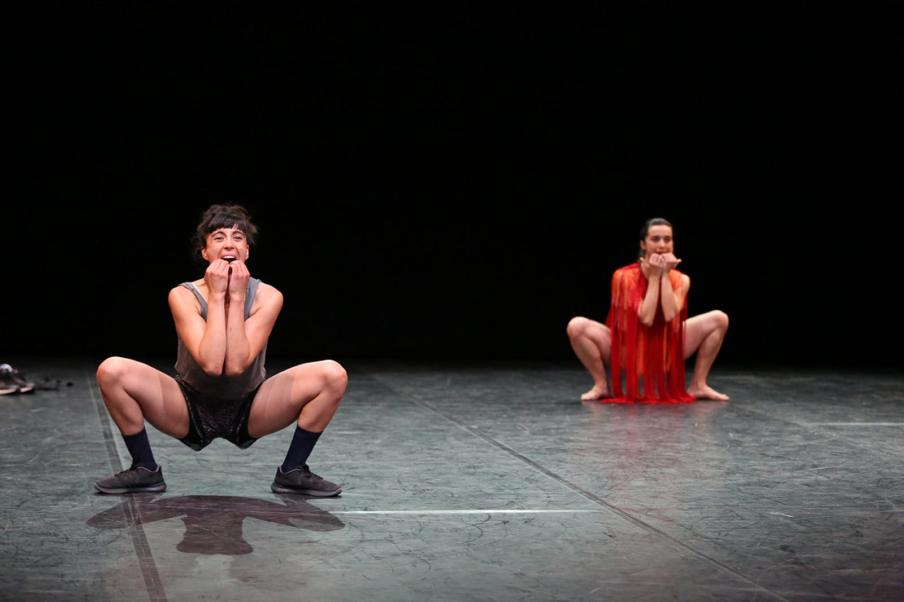

Con il termine MashUp, in ambito musicale si indica una composizione
realizzata miscelando fra loro
due o più samples, in modo libero, attraverso l’appropriazione e la manipolazione degli elementi.
Mash applica, in parte, lo stesso processo nel territorio coreografico, per creare una nuova
dimensione relazionale ibrida, dinamica, in cui nessuna delle due parti si cancella, anzi gli scambi
tra di esse sono continui.
Contaminazione è la parola chiave: l’attenzione non si focalizza sullo
studio
filologico o sulla
riproduzioni dei materiali messi in campo, ma sulla dinamica che scatta quando i frammenti si
concatenano tra loro generando qualcosa di totalmente nuovo, ricco di significati inediti.
"La scena che abitiamo, in costante mutazione, diventa così un luogo di
coesistenza che ci appartiene
e al contempo ci disorienta, costringendoci ad acclimatarci senza sosta. La continua dinamica di
scambio alla base della performance, una sorta di processo di traduzione simultanea l’una
dell’altra, nel suo essere centrifuga separa ciò che si rivela superfluo – e che viene eliminato –
dai segni, dai gesti e dalle espressioni inscritte indelebilmente nel nostro alfabeto corporeo."
Nasce così un’interforma, composta da una commistione di linguaggi dei
quali
ciascuna è portatrice,
linguaggi che non hanno bisogno di affermarsi, ma, al contrario, nel non imporsi creano i
presupposti per accogliere e tradurre l'altro, unica possibilità per generare un incontro vero.
Produzione Cab 008 & Fabrik Cassiopée.
In collaborazione con Le Quartz / Scène nationale de Brest e Danae Festival con il sostegno di
Armunia / Festival Inequilibrio / Centro di residenza, MosaicoDanza / Interplay Festival e
Fondazione Piemonte dal Vivo, Residenza NaoCrea / Ariella Vidach-Aiep, Residenza Graner / Mercat de
les flors.
Con il sostegno di MiBACT e Regione Toscana. Progetto DE.MO. / Movin’up II sessione 2016 a cura
di
MiBACT / Direzione Generale Arte e Architettura Contemporanee e Periferie Urbane / Direzione
Generale Spettacoloe GAI – Associazione per il Circuito dei Giovani Artisti Italiani.
Di e con
Annamaria Ajmone
& Marcela Santander Corvalán
Ricerca sonora e mix
Federica Zamboni
Luci e direzione tecnica
Giulia Pastore


 
